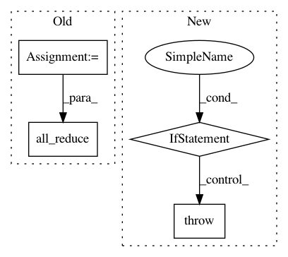

a233fceb859593143dbc29226f483f29253976ae,fairseq/multiprocessing_trainer.py,MultiprocessingTrainer,_async_backward_and_opt,#MultiprocessingTrainer#Any#Any#Any#,197
Before Change
self.loss.backward()
// get model parameters as a flattened (contiguous) tensor
flat_grads = self._flat_model_grads()
// all-reduce grads
nccl.all_reduce(flat_grads)
// normalize grads
if grad_denom != 0:
flat_grads.div_(grad_denom)
After Change
// backward pass
self.loss.backward()
except RuntimeError as e:
if "out of memory" in str(e):
print("| WARNING: ran out of memory on GPU //{}, skipping batch".format(device_id))
oom = True
if hasattr(torch.cuda, "empty_cache"):
torch.cuda.empty_cache()
self.optimizer.zero_grad()
else:
raise e
// all-reduce grads and rescale by grad_denom
self._all_reduce_and_rescale_grads(grad_denom)
// clip grads
grad_norm = torch.nn.utils.clip_grad_norm(self.model.parameters(), self.args.clip_norm)
In pattern: SUPERPATTERN
Frequency: 3
Non-data size: 4
Instances
Project Name: pytorch/fairseq
Commit Name: a233fceb859593143dbc29226f483f29253976ae
Time: 2017-12-06
Author: myleott@fb.com
File Name: fairseq/multiprocessing_trainer.py
Class Name: MultiprocessingTrainer
Method Name: _async_backward_and_opt
Project Name: allenai/allennlp
Commit Name: 87a61ad92a9e0129e5c81c242f0ea96d77e6b0af
Time: 2020-08-19
Author: akshita23bhagia@gmail.com
File Name: allennlp/training/metrics/pearson_correlation.py
Class Name: PearsonCorrelation
Method Name: get_metric